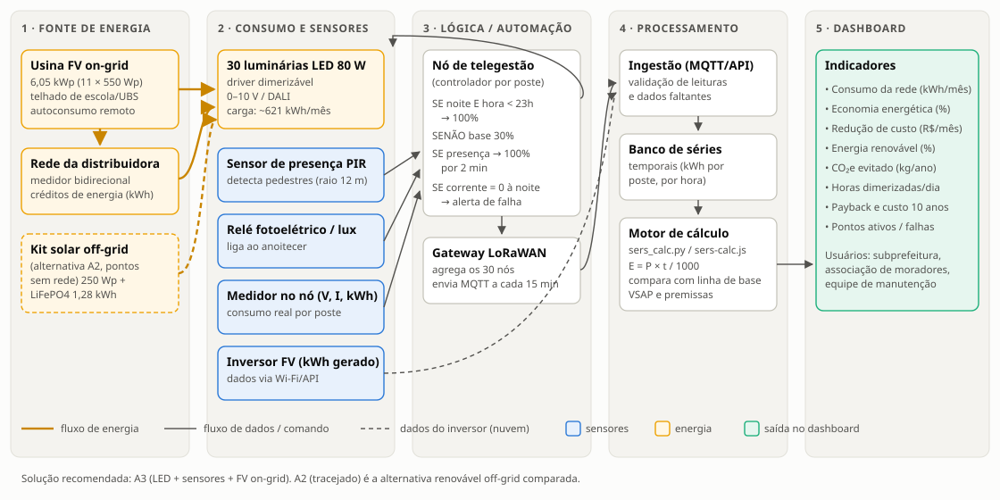

A praça tem 30 postes com lâmpadas de vapor de sódio acesas a 100% a noite toda. Comparamos três melhorias, duas com fonte renovável, para a mesma necessidade de iluminação ao longo de um ano. Os valores são projeções baseadas nas premissas, não resultados garantidos.
Indicadores da alternativa selecionada
Energia mês a mês
Consumo das luminárias e geração da usina FV (A3), em kWh/mês
Noites mais longas no inverno elevam o consumo justamente quando a geração solar é menor. Na compensação (Lei 14.300) o saldo é anual.
Custo total em 10 anos
Investimento + energia + manutenção (R$, valores nominais)
Comparação das alternativas
Mesma necessidade (30 pontos, noite inteira, 12 meses) e mesmo período de referência
Viabilidade do kit solar off-grid (A2)
Geração diária do painel vs. carga diária de um poste (Wh/dia)
Monitoramento simulado — novembro
Leitura diária dos nós de telegestão (dados simulados), kWh/dia
Matriz de decisão
Notas de 1 a 5, ponderadas. Custo e energia vêm dos cálculos; os demais critérios são qualitativos e justificados.
Teste as premissas
Mude os valores e todos os indicadores e gráficos são recalculados pelo mesmo modelo do memorial de cálculo.
Diagrama da solução recomendada
Fonte de energia → consumo e sensores → lógica de automação → processamento → indicadores

Benefícios para a comunidade
Luz branca (IRC ≥ 70) melhora reconhecimento facial e sensação de segurança à noite.
Praça usável para esporte e eventos após o pôr do sol.
Economia na conta de iluminação pública (COSIP) pode ir para manutenção da praça.
Falhas detectadas automaticamente: menos dias com poste apagado.
Fim do descarte de lâmpadas com mercúrio/sódio.
Limitações
Custos e irradiação são estimativas; exigem orçamento e consulta ao SunData para o local exato.
A3 depende de telhado público próximo e de aprovação da distribuidora.
A2 tem risco de furto/vandalismo e baterias a trocar a cada ~8 anos.
A matriz SIN é pouco carbono-intensiva, então o CO₂ evitado é modesto.
Telemetria é simulada; valores reais dependem do uso da praça.